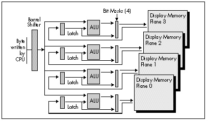

Figure 25.2 Bit mask operation.
| Previous | Table of Contents | Next |
In the last chapter, we examined a simplified model of data flow within the GC portion of the VGA, featuring the latches and ALUs. Now we’re ready to expand that model to include the barrel shifter, bit mask, and the set/reset capabilities, leaving only the write modes to be explored over the next few chapters.
Figure 25.1 shows an expanded model of GC data flow, featuring the barrel shifter and bit mask circuitry. Let’s look at the barrel shifter first. A barrel shifter is circuitry capable of shifting—or rotating, in the VGA’s case—data an arbitrary number of bits in a single operation, as opposed to being able to shift only one bit position at a time. The barrel shifter in the VGA can rotate incoming CPU data up to seven bits to the right (toward the least significant bit), with bit 0 wrapping back to bit 7, after which the VGA continues processing the rotated byte just as it normally processes unrotated CPU data. Thanks to the nature of barrel shifters, this rotation requires no extra processing time over unrotated VGA operations. The number of bits by which CPU data is shifted is controlled by bits 2-0 of GC register 3, the Data Rotate register, which also contains the ALU function select bits (data unmodified, AND, OR, and XOR) that we looked at in the last chapter.

Figure 25.1 Data flow through the Graphics Controller.
The barrel shifter is powerful, but (as sometimes happens in this business) it sounds more useful than it really is. This is because the GC can only rotate CPU data, a task that the CPU itself is perfectly capable of performing. Two OUTs are needed to select a given rotation: one to set the GC Index register, and one to set the Data Rotate register. However, with careful programming it’s sometimes possible to leave the GC Index always pointing to the Data Rotate register, so only one OUT is needed. Even so, it’s often easier and/or faster to simply have the CPU rotate the data of interest CL times than to set the Data Rotate register. (Bear in mind that a single OUT takes from 11 to 31 cycles on a 486—and longer if the VGA is sluggish at responding to OUTs, as many VGAs are.) If only the VGA could rotate latched data, then there would be all sorts of useful applications for rotation, but, sadly, only CPU data can be rotated.
The drawing of bit-mapped text is one use for the barrel shifter, and I’ll demonstrate that application below. In general, though, don’t knock yourself out trying to figure out how to work data rotation into your programs—it just isn’t all that useful in most cases.
The VGA has bit mask circuitry for each of the four memory planes. The four bit masks operate in parallel and are all driven by the same mask data for each operation, so they’re generally referred to in the singular, as “the bit mask.” Figure 25.2 illustrates the operation of one bit of the bit mask for one plane. This circuitry occurs eight times in the bit mask for a given plane, once for each bit of the byte written to display memory. Briefly, the bit mask determines on a bit-by-bit basis whether the source for each byte written to display memory is the ALU for that plane or the latch for that plane.
Figure 25.2 Bit mask operation.
The bit mask is controlled by GC register 8, the Bit Mask register. If a given bit of the Bit Mask register is 1, then the corresponding bit of data from the ALUs is written to display memory for all four planes, while if that bit is 0, then the corresponding bit of data from the latches for the four planes is written to display memory unchanged. (In write mode 3, the actual bit mask that’s applied to data written to display memory is the logical AND of the contents of the Bit Mask register and the data written by the CPU, as we’ll see in Chapter 26.)
The most common use of the bit mask is to allow updating of selected bits within a display memory byte. This works as follows: The display memory byte of interest is latched; the bit mask is set to preserve all but the bit or bits to be changed; the CPU writes to display memory, with the bit mask preserving the indicated latched bits and allowing ALU data through to change the other bits. Remember, though, that it is not possible to alter selected bits in a display memory byte directly; the byte must first be latched by a CPU read, and then the bit mask can keep selected bits of the latched byte unchanged.
Listing 25.1 shows a program that uses the bit mask data rotation capabilities of the GC to draw bitmapped text at any screen location. The BIOS only draws characters on character boundaries; in 640x480 graphics mode the default font is drawn on byte boundaries horizontally and every 16 scan lines vertically. However, with direct bitmapped text drawing of the sort used in Listing 25.1, it’s possible to draw any font of any size anywhere on the screen (and a lot faster than via DOS or the BIOS, as well).
| Previous | Table of Contents | Next |